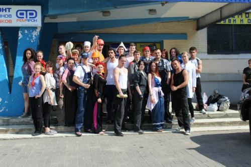

Стильные игры №3 — Профсоюз
«А не замутить ли Стильные игры?» — подумал я. И не замутил.
Как-то прогуливаясь по городу Минску, забрел я в район фабричных корпусов начала XX века. И было красиво. И представились мне стильные советские и не советские рабочие в робах, фуфайках, комбенизонах, выходящие после смены на улицу… А тут вечернее солнце и первые звуки беримбау, собирающие роду…
Дело было за малым — организовать. Договориться об использовании товарного знака, найти место, составить программу. Получив благословение от Ботафого и Артема и узнав о уже сложившихся традициях, начали мы организовывать профсоюзное собрание. И получилось ведь!
День ноль.
После тренировки поехали встречать Артема в аэропорт. После непродолжительной поездки на пепелаце, заметив место обитания стаи оборотей в погонах гаишников, прибыли на место встречи.
Дорога в аэропорт радовала креативными рекламными щитами, оригинальными рекламными промо-акциями заводов-производителей удобрений, своей пустотой и запутанностью развязки.
В лучших традициях мы не знали ни рейса, ни точного времени, ни телефона гостя, только примерное время и место прибытия (и это уже хорошо!), а у Артема было словесное описание тех, кто должен его встречают.
Итак, дуплируя на табло с прилетами в международном гейте, два интеллектуала неспешно убивали время. В это время Артем прилетел, вышел через другой гейт в другом конце нашего огромного пустого аэропорта, поменял деньги на белорусские рубли и уже стал собираться ехать на автобусе №300С по неизвестным маршрутам до остановки „Автовокзал Московский“.
Но совет Кришны или природная смекалка подсказали ему посмотреть, нет ли встречающей группы среди толпящихся в международном гейте. О да. Несмотря на то, что в словесное описание «ну нас будет трое парней под два метра» закралась численная ошибка, Артем ловко идентифицировал эти гнусные рожи представительские лица с капоэйрой в Беларуси.
После непродолжительных лобзаний и объятий, загрузившись в пепелац, мы помчались в город — колыбель революции. В Минск.
А в это время машина-ракета с делегацией из Питера стремительно пожирала километры до Минска, а Москва прислала свой пламенный привет.
День раз.
В 9 утра экипаж автопробега «Питер-Минск-Питер» пересек белорусскую границу, а Артем был выпущен на вольные хлеба в город Минск.
Семью часами позднее…
Машина-ракета стремительно приближалась к Минску на околосветовой скорости. Сбитый бобер, ремонт в Витебске и парадоксы Энштейна-Лифшица не помешали отважным путешественникам предаваться процессу добирания до точки с похвальной самоотдачей. До той самой точки, когда было принято решение выслать спасательный пепелац на встречу нашему доблестному экипажу. Для эскорта.
И все это происходило на подходах к ничего не подозревающему мирному городу. В городе проходил мини-семинар по форро, после чего народ был рассредоточен по ближайшим едальням для ожидания делегации из Питера. Особо выносливые остались прыгать акробатику. Два часа. Железные люди.
Но, все козни мирового семитизм капитализма были преодолены, девочки приехали, и мы начали „спортивно-танцевальное представление с участием коллективов города Минска и прибывших гостей“. Несмотря на то, что на 2 часа позже, чем собирались, у нас выступали коллективы и исполнители оригинального жанра из Аше, Мунды, ФИКА, представители свободных профессий (забыл еще кого-нить, точно) и всякие зеваки.
Что сказать? Концерт удался. Раскачали зал. Получили удовольствие. Фоток и видео пока нет.
Напишите кто-нибудь что-нибудь. У меня со словами плохо.
После концерта приезжие гости были отправлены в ближайшую точку общепита для принятия и усвоения, а минчане распределились по городу в поисках паба, где можно было сесть человекам двадцати. И телевизором с финалом какого-то чемпионата по футболу.
Паб был найден, активная ячейка профсоюза вновь была собрана вместе и вечер с уклоном в ночь был приятно проведен. Челси (?) — чемпион!
День два. Стильные игры.

Что тут писать? Украсили, запустили, отыграли, выгнали, навели порядок, пошли на озеро, сделали еще одну маленькую роду.
Пусть графоманистые участники напишут свои впечатления. Или Ботафого, она красиво пишет, я так не умею, я унылый мизантроп.
PS: Спасибо Ботафого и девочкам, что приехали. Спасибо Тамаре, которая везла всю эту компанию в Минск и везет сейчас назад в Питер. Спасибо Артему, который с пересадками летел туда-сюда, чтобы побывать на Стильных Играх. Спасибо Марине, которая оказала неоценимую помощь в нахождении и декоре зала. Спасибо Вадиму, который нарисовал офигительнейшие открытки. Спасибо вольным и невольным помощникам (Борщ, Киря, Ксана, НН, Саша и Петр), которые предоставили машины, купили/нашли реквизит, поделились шмотками и помогли сделать это действо таким невероятным. Спасибо Кате, которая гостеприимно принимала всю компанию у себя на квартире. Спасибо всем участникам, костюмы просто пиздец отвал башки. Все — молодцы.
PPS: Самые терпеливые могут посмотреть фоточки
PPPS: Если все будет заебись — «Стильные игры №N+1» летом в Одессе. И даже кое-что еще. Покупайте билеты!